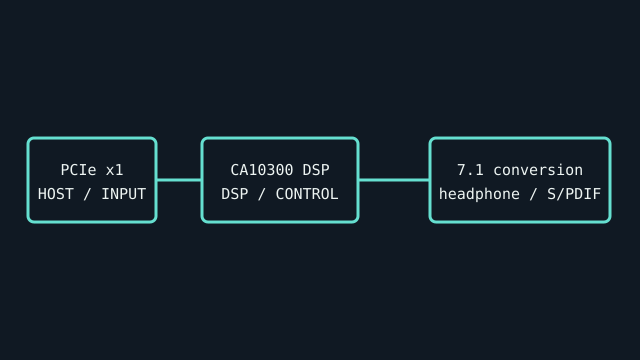

[ INDIVIDUAL COMPONENT // SOUND HARDWARE ]
Creative Sound Blaster Audigy Rx (SB1550)
Creative’s Audigy Rx is a PCI Express x1 7.1 sound card with a dedicated headphone amplifier. SB1550 identifies the card family, not the separate Audigy 4 Pro PCI card.

IDENTIFICATION: Match the complete printed model, revision, bundled breakout, and accessory markings. Specs below describe this named model; family-level variants are not assumed interchangeable.
Specifications
| Catalog subcategory | PCI Express sound cards |
|---|---|
| Product ID | Creative Sound Blaster Audigy Rx, SB1550 |
| Bus / host | PCI Express x1 add-in card. |
| Connectors and I/O | 7.1-channel analog outputs, microphone/line inputs, optical S/PDIF output, and dedicated headphone output. Map exact jacks using the SB1550 manual and driver panel. |
| Chipset / conversion / protocol | Creative product materials specify 24-bit/192-kHz playback capability and 7.1-channel output. The model-specific material cited here does not identify a complete codec/DSP chip marking, so no unverified silicon part number is assigned. |
| Drivers / operating systems | Creative Audigy Rx driver and Sound Blaster Audigy Rx Control Panel are for supported Windows releases listed by Creative. Current OS support varies by last driver package; no Linux/macOS driver claim. |
| Variant compatibility | Audigy Rx SB1550 is PCIe, unlike Audigy 4 Pro SB0380 (PCI). It is not compatible with the external Audigy 4 Pro I/O drive. Verify card label and software product selection. |
Service & preservation
Photograph model number and PCIe bracket before installation. Preserve installer and control-panel version with notes about channel mapping. Check headphone jack, optical output, and analog jacks individually.
Identification and compatibility checks
- Photograph the product/model label, board silkscreen/revision, connector faces, cable assemblies, and accessory part numbers before installation.
- Check electrical bus and host slot or USB/MIDI protocol support against the exact manual; connector shape alone does not establish compatibility.
- For analog I/O, confirm line/mic/instrument level, phantom-power behavior, channel map, and direction from the model-specific documentation before connecting equipment.
- When software or driver support is uncertain, preserve the last known-good installer and document tested host OS, driver version, and device identifier.
Primary manufacturer & standards sources
- Creative Audigy Rx product pageManufacturer description for SB1550 card features and supported output modes.
- Creative Audigy Rx User GuideManufacturer manual for connections and model-specific setup.
- Creative official driver downloadsManufacturer archive; search Audigy Rx/SB1550 and check OS-specific release notes.
Source selection is model-specific where an original manual or vendor product/support page exists. Archived scans preserve manufacturer documentation; operating-system claims are limited to what the cited product/manual materials identify.